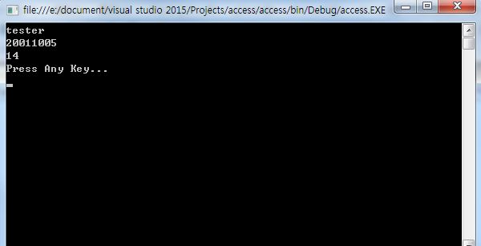

[C# スタディ - 13] アクセス修飾子(public, private, protected)
こんにちは。明月です。
今日はアクセス修飾子について勉強します。
アクセス修飾子
アクセス修飾子はOOPの基本特性のカプセル化と関係があります。
次の投稿のクラスについて勉強する時に詳しく説明すると思いますが、「C#」プログラミングはOOP(オブジェクト指向プログラム)と呼びます。
そしてOOPの最小の単位のオブジェクトはクラスです。そしてクラスの中には様々なデータがあります。
データを定義する時は見せても良いデータがありますが、隠さなければならないデータもあります。
それを区別しながら作成する方をカプセル化と言います。
そうすると、アクセス修飾子の種類は下記とおりです。
| アクセス修飾子 | 内部クラス | 外部クラス | 派生クラス | プロジェクト |
|---|---|---|---|---|
| public | ○ | ○ | ○ | ○ |
| private | ○ | |||
| protected | ○ | ○ | ||
| internal | ○ | ○ | ○ | |
| protected internal | ○ | ○ |
using System;
using System.Collections.Generic;
using System.Linq;
using System.Text;
using System.Threading.Tasks;
namespace access
{
class Program
{
static void Main(string[] args)
{
Humen humen = new Humen();
humen.setData("tester", "20011005");
Console.WriteLine(humen.name);
Console.WriteLine(humen.birth);
Console.WriteLine(humen.year);
Console.WriteLine("Press Any Key...");
Console.ReadLine();
}
}
class Humen
{
//クラス外部で参照できる。
public String name;
public String birth;
public String year;
//クラス外部で参照できない。
private int year_birth;
private int month_birth;
private int day_birth;
/// <summary>
/// 基本データ入力関数
/// </summary>
/// <param name="name">名前</param>
/// <param name="birth">誕生日</param>
public void setData(String name, String birth)
{
this.name = name;
this.birth = birth;
year = yearCalc(birth);
}
/// <summary>
/// 年計算関数
/// </summary>
/// <param name="birth">誕生日</param>
/// <returns>年</returns>
private String yearCalc(String birth)
{
year_birth = Convert.ToInt32(birth.Substring(0, 4));
month_birth = Convert.ToInt32(birth.Substring(4, 2));
day_birth = Convert.ToInt32(birth.Substring(6, 2));
DateTime now = DateTime.Now;
now = now.AddYears(year_birth * -1).AddMonths(month_birth * -1).AddDays(day_birth * -1);
return now.Year.ToString();
}
}
}
上の例は実際にそのように実装するとダメですが、アクセス修飾子の説明ために作成しました。
とにかく、例を見ると「public」は変数「name」、「birth」、「year」、メソッド「setData」が外部から見えます。逆に変数「year_birth」、「month_birth」、「day_birth」、メソッド「yearCalc」は「Humen」クラスの構成より「year」を計算するためのデータなので外部から見せる必要がありません。
逆に考えてすべての変数、メソッドが「public」になって外部に見せることになるとクラスの処理には問題がないですが、プロジェクト管理するためには深刻な問題が発生する可能性があります。
なぜなら、ただ「name」、「birth」、「year」だけ見える時はクラスを知らない方が見てもユーザと関係があるクラスだと思いますが、すべてのデータが開けると意味がわからなくなります。
また、上の例は簡単なので処理問題では発生しないけれども複雑のプログラムなら処理中で計算データを変更させると結果データが可笑しく出る可能性があることです。
